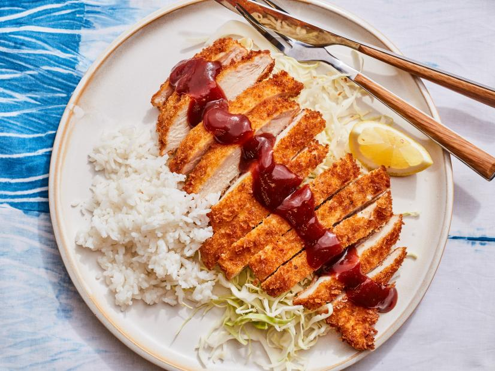

Chicken Katsu Recipe

Description
Light and crispy japanese style fried chicken. This japanese style chicken has a subtle taste making it pair extremely well with most sauces and is sure to make you're entire family to want more!
Ingredients
- 4 skinless,boneless chicken breasts halves-pounded to 1/2 inch thickness
- Salt and pepper to taste
- 2 tablespoons all-purpose flour
- 1 egg, beaten
- 1 cups panko bread crumbs
- 1 cup oil for frying, or as needed
Steps
- Season the Chicken breasts on both sides with salt and pepper
- Place the flour,egg and panko crumbs into seperate shallow dishes
- Coat the chicken breasts in flour, shaking off any excess
- Dip them into the egg, and then press into the panko crumbs until it's well coated on both sides
- Heat 1/4 inch of oil in a large skillet over medium-high heat
- Place chicken in the hot oil, and cook 3 or 4 minutes per side, or until golden brown